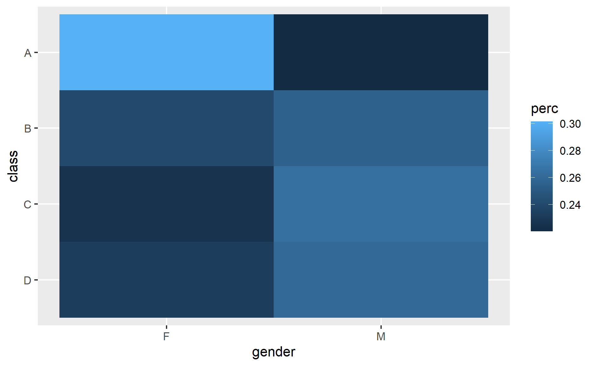

Photo by Aditya Patil on Unsplash
What is ordinal data?
Ordinal data is a form of categorical data that has a meaningful order among its categories (Geeks for geeks 2023).
Following are some examples of ordinal data:
Likert scales
Preference of ranking
Why can’t we use Ordinary Least Square to analyze ordinal data?
(IBM 2023) explained that usual linear regression does not work well on ordinal data. The usual linear regression assumes the dependent variable is measured on interval scale.
Linear regression is also sensitive to the way you define categories of the target variable. With an ordinal variable, the important thing is the ordering of categories. So, if you collapse two adjacent categories into one larger category, you are making only a small change, and models built using the old and new categorizations should be very similar. Unfortunately, because linear regression is sensitive to the categorization used, a model built before merging categories could be quite different from one built after.
What do we do if the proportional odds assumption does not hold for the fitted model?
Below are some ways to handle when the proportional odds assumption fail (McNulty 2024):
Simplify the model by removing the variables (e.g., removing those fail the test)
Fit other types of models (e.g., multinomial logistic regression, adjacent-category logistic model, continuation-ratio logistic model etc)
Demonstration
In this demosntration, I will be using several methods to fit an ordinal logistic regression.
pacman::p_load(tidyverse, tidymodels, janitor, MASS, car, VGAM, brant, gofcat)Import Data
I will be using this body performance dataset I found on Kaggle for this demonstration.
Model Building
Now, let’s start building the ordinal logistic regression!
polr function from MASS package
First, I will be using the polr function from MASS package.
polr_fit <-
polr(class ~ age
+ gender
+ height_cm
+ weight_kg
+ body_fat_percent
+ diastolic
+ systolic
+ grip_force
+ sit_ups_counts
+ broad_jump_cm
,data = df
,Hess = TRUE)
summary(polr_fit)Call:
polr(formula = class ~ age + gender + height_cm + weight_kg +
body_fat_percent + diastolic + systolic + grip_force + sit_ups_counts +
broad_jump_cm, data = df, Hess = TRUE)
Coefficients:
Value Std. Error t value
age 0.098021 0.0019150 51.186
genderM -4.274917 0.0840451 -50.865
height_cm -0.002478 0.0016420 -1.509
weight_kg -0.084318 0.0031316 -26.925
body_fat_percent -0.041632 0.0040857 -10.190
diastolic -0.007484 0.0022090 -3.388
systolic 0.006783 0.0016736 4.053
grip_force 0.099736 0.0037366 26.692
sit_ups_counts 0.143178 0.0025244 56.718
broad_jump_cm 0.021129 0.0009614 21.977
Intercepts:
Value Std. Error t value
D|C 5.6697 0.0024 2405.1223
C|B 7.6236 0.0304 250.8891
B|A 9.4533 0.0405 233.5223
Residual Deviance: 26656.33
AIC: 26682.33 According to the documentation, this model is also known as ‘cumulative link model’.
Note that we need to specify Hess to be TRUE, so that the standard errors will be computed.
Note that the intercepts also sometimes known as ‘cutpoints’.
We can obtain the odd by taking exponential on the coefficients of the variables.
as.data.frame(exp(coef(polr_fit))) exp(coef(polr_fit))
age 1.1029857
genderM 0.0139132
height_cm 0.9975252
weight_kg 0.9191389
body_fat_percent 0.9592222
diastolic 0.9925436
systolic 1.0068061
grip_force 1.1048797
sit_ups_counts 1.1539346
broad_jump_cm 1.0213535Example on how we interpret the results:
- If all else being equal, switching from female to male, the odd of moving up the class is 0.014
df %>%
group_by(gender, class) %>%
tally() %>%
group_by(gender) %>%
mutate(perc = n/sum(n)) %>%
ggplot(aes(gender, class, fill = perc)) +
geom_tile()
If we were to visualize the proportion of male and female within each class, we could see that within each gender, the proportion of class A is higher for female.
The function also allows nonlinear transformation on the variable and interactions as shown below.
polr_fit_complex <-
polr(class ~ poly(age, 3) * gender
+ sit_ups_counts
,data = df
,Hess = TRUE)
polr_fit_complexCall:
polr(formula = class ~ poly(age, 3) * gender + sit_ups_counts,
data = df, Hess = TRUE)
Coefficients:
poly(age, 3)1 poly(age, 3)2 poly(age, 3)3
97.8324929 19.1136465 11.4424783
genderM sit_ups_counts poly(age, 3)1:genderM
-2.7216160 0.1713085 49.2028893
poly(age, 3)2:genderM poly(age, 3)3:genderM
-9.6848689 11.8204803
Intercepts:
D|C C|B B|A
3.406247 5.089025 6.707173
Residual Deviance: 29283.65
AIC: 29305.65 To compute the anova, the base R anova function does not support polr object at point of writing, hence we need to use the Anova function from car package.
Over here, I will use type 2 and I will leave the exploration of different types of anova in future post.
Anova(polr_fit, type = 2)Analysis of Deviance Table (Type II tests)
Response: class
LR Chisq Df Pr(>Chisq)
age 2587.0 1 < 2.2e-16 ***
gender 2816.9 1 < 2.2e-16 ***
height_cm 0.3 1 0.568298
weight_kg 550.7 1 < 2.2e-16 ***
body_fat_percent 76.8 1 < 2.2e-16 ***
diastolic 11.5 1 0.000706 ***
systolic 16.1 1 6.03e-05 ***
grip_force 754.7 1 < 2.2e-16 ***
sit_ups_counts 3729.5 1 < 2.2e-16 ***
broad_jump_cm 485.4 1 < 2.2e-16 ***
---
Signif. codes: 0 '***' 0.001 '**' 0.01 '*' 0.05 '.' 0.1 ' ' 1Based on the results from anova function, we could see that sit_ups_counts is the most importance variable.
vglm function from VGAM package
Alternatively, we could use the vglm function from VGAM package to fit an ordinal logistic regression model.
vglm_fit <-
vglm(class ~ age
+ gender
+ height_cm
+ weight_kg
+ body_fat_percent
+ diastolic
+ systolic
+ grip_force
+ sit_ups_counts
+ broad_jump_cm
,data = df
,family = cumulative(parallel = TRUE))
summary(vglm_fit)
Call:
vglm(formula = class ~ age + gender + height_cm + weight_kg +
body_fat_percent + diastolic + systolic + grip_force + sit_ups_counts +
broad_jump_cm, family = cumulative(parallel = TRUE), data = df)
Coefficients:
Estimate Std. Error z value Pr(>|z|)
(Intercept):1 5.6696708 0.7152252 7.927 2.24e-15 ***
(Intercept):2 7.6236669 0.7168194 10.635 < 2e-16 ***
(Intercept):3 9.4533458 0.7182343 13.162 < 2e-16 ***
age -0.0980207 0.0020581 -47.626 < 2e-16 ***
genderM 4.2749125 0.0863356 49.515 < 2e-16 ***
height_cm 0.0024777 0.0043361 0.571 0.567719
weight_kg 0.0843179 0.0036289 23.235 < 2e-16 ***
body_fat_percent 0.0416324 0.0046994 8.859 < 2e-16 ***
diastolic 0.0074843 0.0022184 3.374 0.000742 ***
systolic -0.0067830 0.0016959 -4.000 6.34e-05 ***
grip_force -0.0997362 0.0037031 -26.933 < 2e-16 ***
sit_ups_counts -0.1431773 0.0025642 -55.837 < 2e-16 ***
broad_jump_cm -0.0211287 0.0009837 -21.479 < 2e-16 ***
---
Signif. codes: 0 '***' 0.001 '**' 0.01 '*' 0.05 '.' 0.1 ' ' 1
Names of linear predictors: logitlink(P[Y<=1]), logitlink(P[Y<=2]),
logitlink(P[Y<=3])
Residual deviance: 26656.33 on 40166 degrees of freedom
Log-likelihood: -13328.17 on 40166 degrees of freedom
Number of Fisher scoring iterations: 7
No Hauck-Donner effect found in any of the estimates
Exponentiated coefficients:
age genderM height_cm weight_kg
0.9066302 71.8738468 1.0024808 1.0879747
body_fat_percent diastolic systolic grip_force
1.0425112 1.0075123 0.9932400 0.9050761
sit_ups_counts broad_jump_cm
0.8666004 0.9790930 Note that we need to specify the parallel is TRUE so that the function will fit a proportional odds ordinal logistic regression, otherwise the coefficients for the variables (i.e., the slopes) would be different for each class.
We could make some variables with different coefficients by indicating parallel to FALSE and passing the variables name into cumulative argument.
vglm_fit_partial <-
vglm(class ~ age
+ gender
+ height_cm
+ weight_kg
+ body_fat_percent
+ diastolic
+ systolic
+ grip_force
+ sit_ups_counts
+ broad_jump_cm
,data = df
,family = cumulative(parallel = FALSE ~ gender))
summary(vglm_fit_partial)
Call:
vglm(formula = class ~ age + gender + height_cm + weight_kg +
body_fat_percent + diastolic + systolic + grip_force + sit_ups_counts +
broad_jump_cm, family = cumulative(parallel = FALSE ~ gender),
data = df)
Coefficients:
Estimate Std. Error z value Pr(>|z|)
(Intercept):1 5.6471585 0.7156459 7.891 3.00e-15 ***
(Intercept):2 7.5266726 0.7176556 10.488 < 2e-16 ***
(Intercept):3 9.2563531 0.7198305 12.859 < 2e-16 ***
age -0.0981014 0.0020595 -47.634 < 2e-16 ***
genderM:1 4.1361953 0.0956351 43.250 < 2e-16 ***
genderM:2 4.2486122 0.0908969 46.741 < 2e-16 ***
genderM:3 4.4101957 0.0936565 47.089 < 2e-16 ***
height_cm 0.0031557 0.0043399 0.727 0.467146
weight_kg 0.0843494 0.0036292 23.242 < 2e-16 ***
body_fat_percent 0.0418385 0.0047024 8.897 < 2e-16 ***
diastolic 0.0076836 0.0022195 3.462 0.000536 ***
systolic -0.0068132 0.0016965 -4.016 5.92e-05 ***
grip_force -0.1006016 0.0037108 -27.110 < 2e-16 ***
sit_ups_counts -0.1426206 0.0025685 -55.527 < 2e-16 ***
broad_jump_cm -0.0211537 0.0009841 -21.495 < 2e-16 ***
---
Signif. codes: 0 '***' 0.001 '**' 0.01 '*' 0.05 '.' 0.1 ' ' 1
Names of linear predictors: logitlink(P[Y<=1]), logitlink(P[Y<=2]),
logitlink(P[Y<=3])
Residual deviance: 26640.57 on 40164 degrees of freedom
Log-likelihood: -13320.28 on 40164 degrees of freedom
Number of Fisher scoring iterations: 7
No Hauck-Donner effect found in any of the estimates
Exponentiated coefficients:
age genderM:1 genderM:2 genderM:3
0.9065570 62.5643266 70.0081896 82.2855685
height_cm weight_kg body_fat_percent diastolic
1.0031607 1.0880090 1.0427260 1.0077132
systolic grip_force sit_ups_counts broad_jump_cm
0.9932100 0.9042932 0.8670830 0.9790684 From the result above, we could see that Hauck-Donner effect is checked when fitting the model by using vglm function.
Especially for categorical regression models such as the binary and polytomous logistic models, problems arise when a part of the covariate space yields an outcome probability of zero or one so that there is perfect separation in a covariate distribution (Jr 2024).
VGAM package has anova function to compute the necessary results.
anova(vglm_fit)Analysis of Deviance Table (Type II tests)
Model: 'cumulative', 'VGAMordinal', 'VGAMcategorical'
Links: 'logitlink'
Response: class
Df Deviance Resid. Df Resid. Dev Pr(>Chi)
age 1 2587.0 40167 29243 < 2.2e-16 ***
gender 1 2816.9 40167 29473 < 2.2e-16 ***
height_cm 1 0.3 40167 26657 0.568298
weight_kg 1 550.7 40167 27207 < 2.2e-16 ***
body_fat_percent 1 76.8 40167 26733 < 2.2e-16 ***
diastolic 1 11.5 40167 26668 0.000706 ***
systolic 1 16.1 40167 26672 6.03e-05 ***
grip_force 1 754.7 40167 27411 < 2.2e-16 ***
sit_ups_counts 1 3729.5 40167 30386 < 2.2e-16 ***
broad_jump_cm 1 485.4 40167 27142 < 2.2e-16 ***
---
Signif. codes: 0 '***' 0.001 '**' 0.01 '*' 0.05 '.' 0.1 ' ' 1Test Proportional Odds Assumptions
There are a few approaches to check the proportional odds assumption.
Method 1: Use anova to compare the models with proportional odds and without
vglm_fit_same_slope <-
vglm(class ~ age
,data = df
,family = cumulative(parallel = TRUE))
summary(vglm_fit_same_slope)
Call:
vglm(formula = class ~ age, family = cumulative(parallel = TRUE),
data = df)
Coefficients:
Estimate Std. Error z value Pr(>|z|)
(Intercept):1 -1.416779 0.046880 -30.22 < 2e-16 ***
(Intercept):2 -0.315285 0.045237 -6.97 3.18e-12 ***
(Intercept):3 0.785972 0.045792 17.16 < 2e-16 ***
age 0.008572 0.001137 7.54 4.72e-14 ***
---
Signif. codes: 0 '***' 0.001 '**' 0.01 '*' 0.05 '.' 0.1 ' ' 1
Names of linear predictors: logitlink(P[Y<=1]), logitlink(P[Y<=2]),
logitlink(P[Y<=3])
Residual deviance: 37075.95 on 40175 degrees of freedom
Log-likelihood: -18537.98 on 40175 degrees of freedom
Number of Fisher scoring iterations: 3
No Hauck-Donner effect found in any of the estimates
Exponentiated coefficients:
age
1.008609 vglm_fit_different_slope <-
vglm(class ~ age
,data = df
,family = cumulative(parallel = FALSE))
summary(vglm_fit_different_slope)
Call:
vglm(formula = class ~ age, family = cumulative(parallel = FALSE),
data = df)
Coefficients:
Estimate Std. Error z value Pr(>|z|)
(Intercept):1 -1.433072 0.057829 -24.781 < 2e-16 ***
(Intercept):2 -0.238418 0.049814 -4.786 1.70e-06 ***
(Intercept):3 0.694992 0.057426 12.102 < 2e-16 ***
age:1 0.009001 0.001443 6.237 4.47e-10 ***
age:2 0.006496 0.001271 5.112 3.19e-07 ***
age:3 0.011136 0.001506 7.392 1.45e-13 ***
---
Signif. codes: 0 '***' 0.001 '**' 0.01 '*' 0.05 '.' 0.1 ' ' 1
Names of linear predictors: logitlink(P[Y<=1]), logitlink(P[Y<=2]),
logitlink(P[Y<=3])
Residual deviance: 37060.53 on 40173 degrees of freedom
Log-likelihood: -18530.26 on 40173 degrees of freedom
Number of Fisher scoring iterations: 3
No Hauck-Donner effect found in any of the estimates
Exponentiated coefficients:
age:1 age:2 age:3
1.009041 1.006518 1.011198 anova(vglm_fit_same_slope, vglm_fit_different_slope, type = 1)Analysis of Deviance Table
Model 1: class ~ age
Model 2: class ~ age
Resid. Df Resid. Dev Df Deviance Pr(>Chi)
1 40175 37076
2 40173 37061 2 15.422 0.0004478 ***
---
Signif. codes: 0 '***' 0.001 '**' 0.01 '*' 0.05 '.' 0.1 ' ' 1Method 2: Use other packages to check
However, these functions have some limitations at the point of writing:
brantfunction is not able to support models in S4 classBoth functions seem to be unable to handle
polyfunction, but interactions are fine
gofcat::brant.test(vglm_fit)
Brant Test:
chi-sq df pr(>chi)
Omnibus 309.31 20 < 2e-16 ***
age 1.35 2 0.508
genderM 22.97 2 1.0e-05 ***
height_cm 29.35 2 4.2e-07 ***
weight_kg 37.25 2 8.2e-09 ***
body_fat_percent 32.96 2 6.9e-08 ***
diastolic 1.44 2 0.487
systolic 2.93 2 0.231
grip_force 7.70 2 0.021 *
sit_ups_counts 5.77 2 0.056 .
broad_jump_cm 44.48 2 2.2e-10 ***
---
Signif. codes: 0 '***' 0.001 '**' 0.01 '*' 0.05 '.' 0.1 ' ' 1
H0: Proportional odds assumption holdsbrant(polr_fit)----------------------------------------------------
Test for X2 df probability
----------------------------------------------------
Omnibus 309.31 20 0
age 1.35 2 0.51
genderM 22.97 2 0
height_cm 29.35 2 0
weight_kg 37.25 2 0
body_fat_percent 32.96 2 0
diastolic 1.44 2 0.49
systolic 2.93 2 0.23
grip_force 7.7 2 0.02
sit_ups_counts 5.77 2 0.06
broad_jump_cm 44.48 2 0
----------------------------------------------------
H0: Parallel Regression Assumption holdsFrom the results above, as p-value is less than 0.05, we would reject null hypothesis and conclude that there is statistical evidence that proportional odds assumption does not hold.
The test also shows us which variable does not fulfill the proportional odds assumption.
Method 3: Extract the model output to conduct the statistical test
Another apporach to check the proportion odds assumption is by using the formula below mentioned on this course website.
g2_prop = 2*(logLik(vglm_fit_different_slope) - logLik(vglm_fit_same_slope))
df_prop = df.residual(vglm_fit_same_slope) - df.residual(vglm_fit_different_slope)
1 - pchisq(g2_prop, df_prop)[1] 0.0004478005Again the p-value is less than 0.05, we would reject null hypothesis.
Helpful resource
These are some of the other helpful online resources I referred to when I was studying on ordinal regression.
Post on Ordinal Logistic regression
Ordinal logistic regression in R
Conclusion
That’s all for the day!
Thanks for reading the post until the end.
Feel free to contact me through email or LinkedIn if you have any suggestions on future topics to share.
Refer to this link for the blog disclaimer.
Till next time, happy learning!

Photo by Engin Akyurt